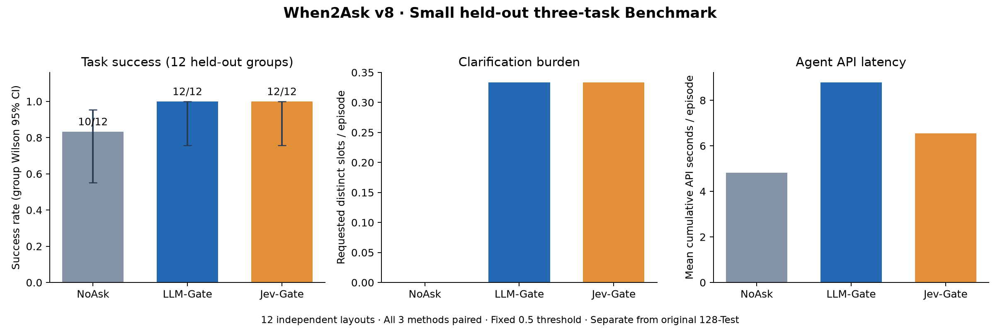
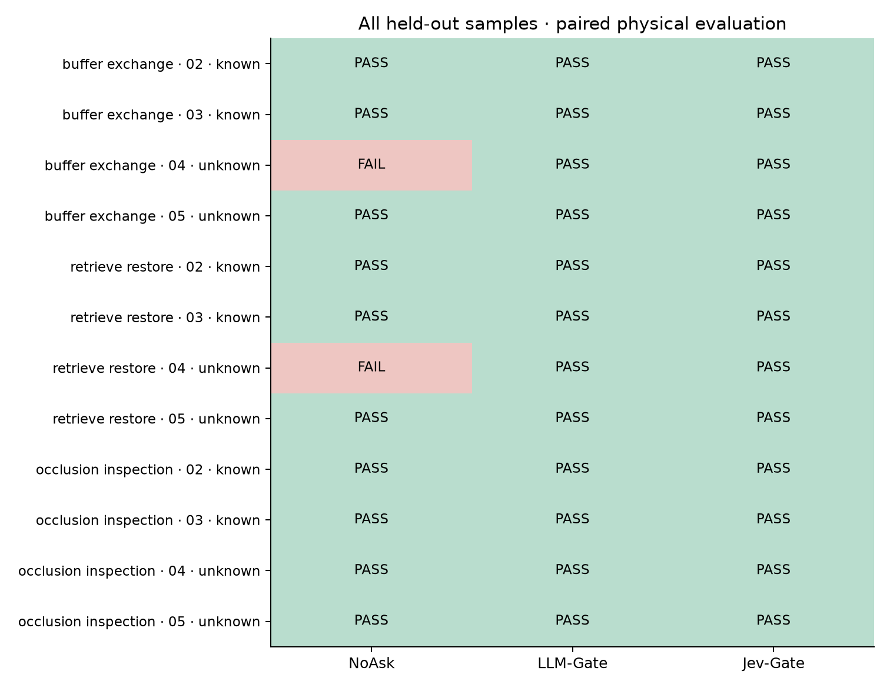
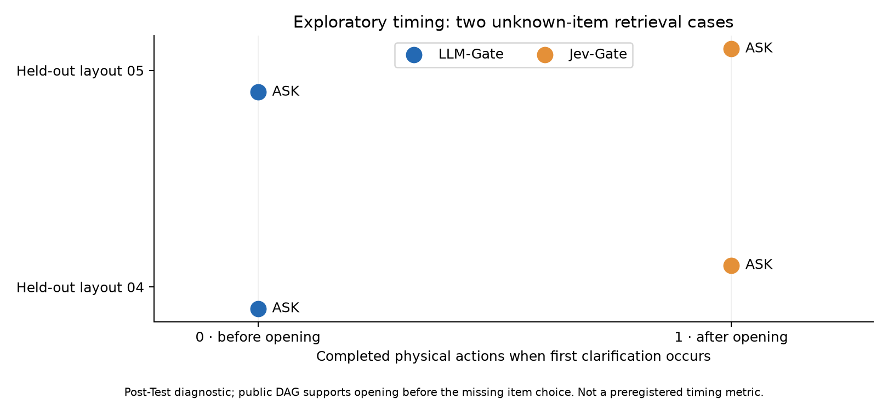

Knowing when to ask.
Three task templates · Fresh held-out physical layouts · Real DeepSeek / Jev / PyBullet
All Test samples, three paired methods
Source, data, prompts and threshold 0.5 frozen before model Test. Original 128-Test remains unchanged and unrun.
| Method | Success | Mean burden | API latency total | Skill rejections |
|---|
12 independent groups. Confidence intervals are descriptive; no statistical superiority claim. Three rejected panel-placement commands were followed by actual cover repairs; failures remain in the logs.

Three methods, one held-out scene
These three cases were selected for recording before Test, by first undisclosed layout per template. Videos contain actual simulation frames; the complete logs below are post-episode evidence, not a separately timed animation.
Paired outcomes and exploratory timing


Timing analysis uses a public-DAG support reference after Test; it was not a preregistered optimal-timing metric. No hidden preference is used in that reference.